SICI 4997 - Special Topics and New Technologies
RStudio is an integrated development environment (IDE) for R that provides tools for coding, visualization, and debugging in a user-friendly interface.
You create a database called UPRB_System has information related to each semester of the courses created. We have a file in uprb_database.csv. The information contains the teacher’s name, course code, section, name of the course, day and time it is offered, amount of credits, capacity, room and modality. The UPR Bayamon wants summarize all the information that they garther since 2017. Write a program in Python and R (modalityStudent.R) to answer the following questions.
How to read a CSV file in R and save the data in the dataframe?
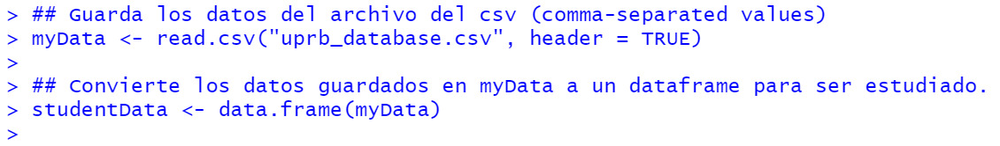
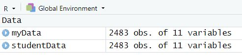
1. How many students are in the hybrid mode?
a. Term: C12
Semester C12 has in hybrid mode.
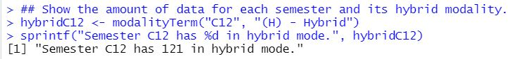
b. Term: C11
Semester C12 has in hybrid mode.
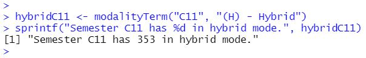
c. Term: C03
Semester C12 has in hybrid mode.
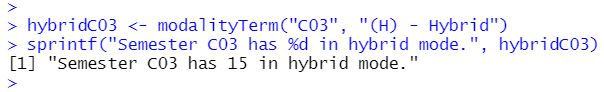
d. Term: C02
Semester C12 has in hybrid mode.
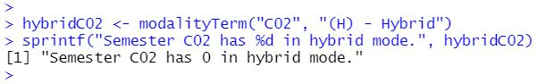
2. How many students are in the face-to-face mode?
a. Term: C12
Semester C12 has in face-to-face mode.
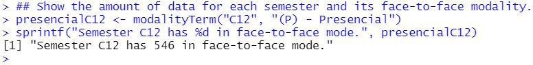
b. Term: C11
Semester C11 has in face-to-face mode.
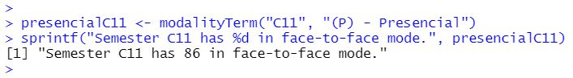
c. Term: C03
Semester C03 has in face-to-face mode.
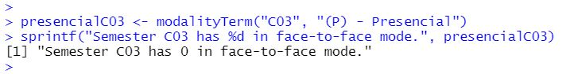
d. Term: C02
Semester C02 has in face-to-face mode.
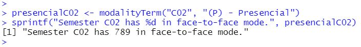
3. How many students are in the distance mode?
a. Term: C12
Semester C12 has in distance mode.
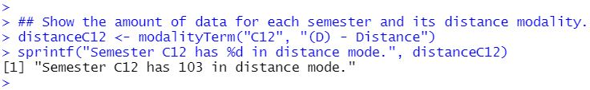
b. Term: C11
Semester C11 has in distance mode.
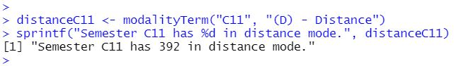
c. Term: C03
Semester C03 has in distance mode.
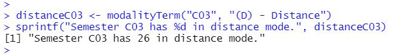
d. Term: C02
Semester C02 has in distance mode.
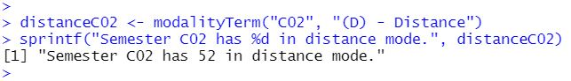
In R, you can create a pie chart using the pie() function. First, define a vector of values and labels, then call pie(values, labels = labels, main = "TITLE"). You can further customize the chart by adding colors with the col parameter and enhancing the appearance with additional graphical options.
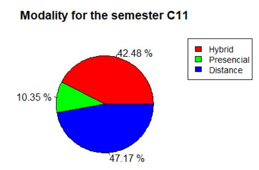
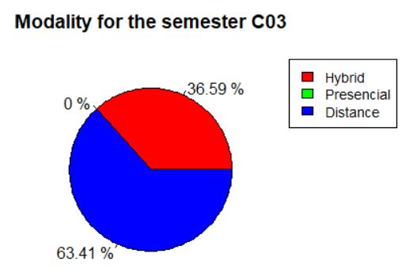
4. How many students of the code course COTI3101 course are face-to-face mode?
Semester C11 in COTI3101 has in distance mode.
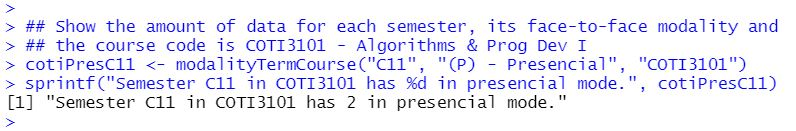
5. How many courses have been created from COTI3101 for semester C11?
Semester C11 in COTI3101 has the amount of courses.
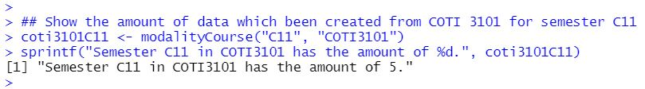
6. How many courses have been created from SICI4036 course are hybrid?
This question was added recently from the dataset.
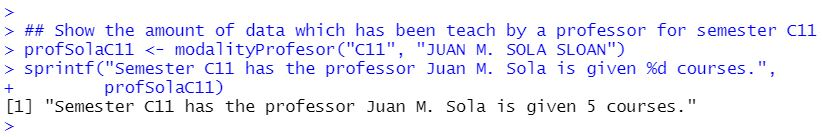
7. How many courses were offered on Tuesdays and Thursdays in semester C11?
On Tuesdays and Thursdays at courses are offered in term C11.
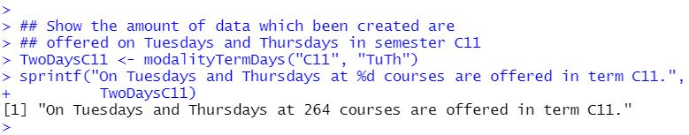
8. How many courses were offered on Wednesday in semester C11?
On Wednesday at courses are offered in term C11.
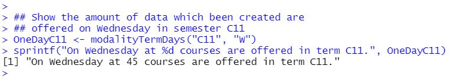
9. How many courses were offered in the semester?
C22: , C12: , C11: , C03: y C02:
10. How many courses were offered in C02 and C11? How much was the difference?
Term C02 has courses and Term C11 has courses. The difference between C11 and C02 is courses.
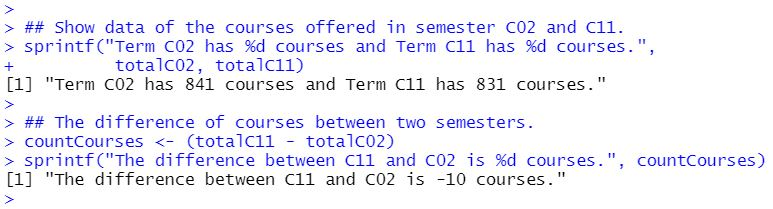
Using the R Studio, the Integrated Development Environment (IDE) to perform data mining that works efficiently on the R environment and enhances its features. The large set of data could be processed and manipulated using R environment. In R, it can be widely used in statistical analysis of data because it can handle a giant size, the user can not notice patterns or occurrence of data. It may also be able to achieve reliability and reduce user tampering to prevent fraud or incomplete and inaccurate data. It reduces the risk of the human being committing an error when manipulating a gigantic data set "Big Data" in which a human can take two to three days to detect manipulation of the data.